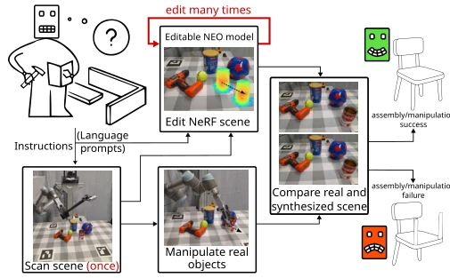
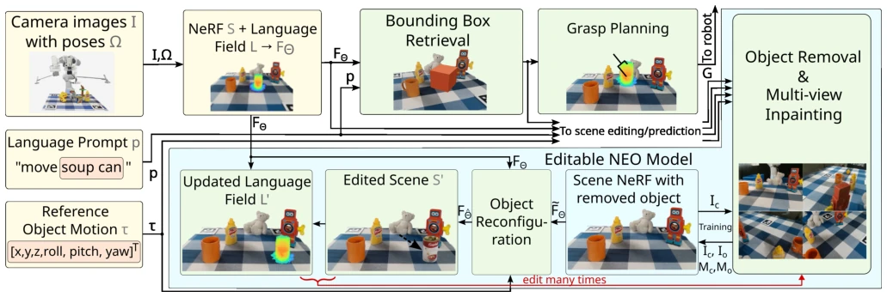
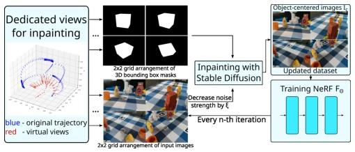
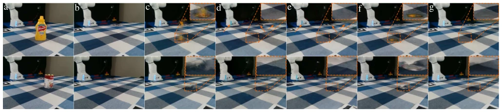
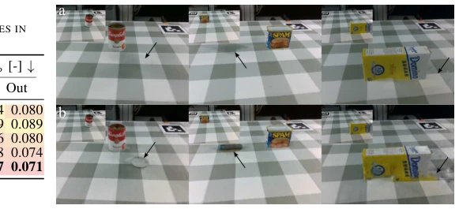
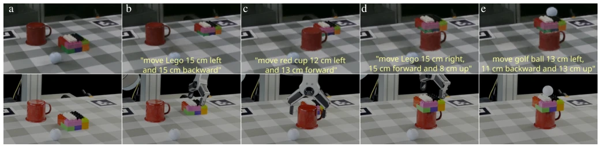
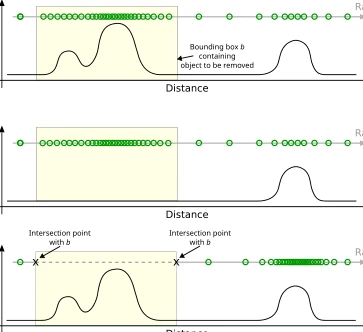
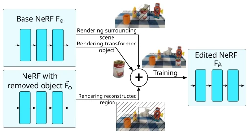

NEO: NeRF It Once, Edit It Many Times for Continuous Object Manipulation
Mikołaj Zieliński, David Hall, Dominik Belter, Peyman Moghadam abspdf
论文点评Review
这篇 NEO 工作算是给 NeRF 在机器人领域加了个“橡皮擦”和“粘贴板”，口号喊得响“一次扫描，多次编辑”。确实解决了反复重扫描的痛点，但本质上还是基于静态场景的 NeRF 做增量修改。虽然作者吹嘘能用于多阶段装配，但看未来工作里还提到要扩展到人形物体，说明现在对复杂形变还是有点虚。不过，在桌面操作这种相对刚性的场景里，它确实比 DFF 或 NeRFiller 更靠谱，尤其是几何一致性方面。最大的槽点可能是对初始扫描质量依赖较高，且虚拟视图生成是否真的能覆盖所有遮挡情况还得打问号。总的来说，是个不错的 World Model 雏形，适合做具身智能的中间层表示，但离通用操作还有距离。
This NEO work can be regarded as adding an "eraser" and a "clipboard" to NeRF in the robotics field, with the slogan "one scan, multiple edits". It indeed solves the pain point of repeated re-scanning, but essentially it is still incremental modification based on static scene NeRF. Although the authors boast it can be used for multi-stage assembly, the mention in future work of extending to humanoid objects indicates that it is currently somewhat weak on complex deformations. However, in relatively rigid scenes like desktop manipulation, it is indeed more reliable than DFF or NeRFiller, especially regarding geometric consistency. The biggest drawback may be the high dependency on initial scan quality, and whether virtual view generation can truly cover all occlusion cases remains questionable. Overall, it is a decent prototype of a World Model, suitable as an intermediate layer representation for embodied intelligence, but still far from general manipulation.
Although NeRF has good reconstruction quality, it is essentially static [1]. Robot manipulation is interactive; actions change the scene, causing the original NeRF to become invalid. Existing solutions either require re-scanning [16], which is inefficient; or have geometric inconsistency after editing. For example, DFF [26] suffers from background undersampling after object removal, producing artifacts; NeRFiller [17] is slow to retrain and may have hallucinations; Seal-3D [19] can move objects but does not solve the geometric reconstruction problem after removal. These methods struggle to support continuous multi-step operations because the edited representation is often not persistent or cannot serve as input for the next step. Therefore, a NeRF editing framework is needed that can directly modify weights, maintain geometric consistency, and support language guidance, allowing robots to predict post-interaction scene states without re-scanning.

Fig. 1. Example assembly task: given language prompts and a single initial scan, the robot executes multiple manipulations. NEO updates the NeRF scene model after each interaction to predict the new scene state without re-scanning.
NEO is divided into three stages: Removal, Repair, and Reconfiguration. First, objects are removed via neural field resampling, avoiding background undersampling by excluding object regions for sampling and reallocating ray samples [Fig 4]. Next, multi-view consistent progressive repair is used, generating virtual camera views focusing on occluded areas, combining diffusion model inpainting and mask-conditioned training to recover occluded geometry [Fig 6]. Finally, knowledge distillation is used to reconfigure the scene, using the original NeRF and edited NeRF as teacher networks, while the student network learns the merged state to ensure modification persistence [Fig 7]. The language field is also updated synchronously to support subsequent queries [Fig 2]. The entire process directly modifies network weights, supports iterative editing, and requires no re-scanning. Specifically, the resampling stage uses a two-stage sampling strategy, first uniform sampling then resampling based on probability distribution, ensuring sufficient samples in areas behind the removed object. The repair stage introduces virtual hemispherical views to enhance supervision of occluded areas. The distillation stage is divided into two steps, first supervising density and color, then supervising RGB and depth, ensuring geometric consistency.

Fig. 2. Architecture of the proposed editable NEO model and its role within the robotic manipulation system. A set of camera images is used to build the NeRF and the language field. Given a language prompt, the object to be removed from the scene is selected. Prior to grasp planning and motion execution, the proposed editable NEO model is used to reposition the object within the neural field and to predict the scene state after the robotic interaction. This is achieved through the proposed object removal, multiview inpainting, and object reconfiguration modules.

Fig. 6. Multiview consistent progressive inpainting method and NeRF ˜ FΘ training with removed object using iterative inpainting.

Fig. 8. Example scenes after removing the selected object: (a) original scenes with object, (b) ground truth images after object removal, (c) DFF [26], (d) NeRFiller [17], (e) NeRFillerw/oD [17], (f) Seal-3D [19], and (g) NEO (ours). Regions corresponding to the areas after object removal are shown in enlarged views, and the deformations introduced by NeRFiller are indicated with arrows.

Fig. 9. Example images generated by (a) NEO and (b) Seal-3D [19] after object manipulation experiments. Corner images and arrows show the initial configurations of objects and artifacts generated by both methods, respectively.
The authors constructed the NEO-Dataset, containing 12 desktop scenes with ground truth scans before and after editing. Comparison baselines include DFF [26], NeRFiller [17], and Seal-3D [19]. Metrics used include PSNR, SSIM, RMSE, etc. In results, NEO leads comprehensively in object removal and grasp-and-place tasks, with fewer artifacts, and is 15 times faster than DFF [Fig 8, Fig 9]. Ablation studies indicate that mask-conditioned training is the most critical. In assembly tasks, NEO can continuously predict the state after four operations, highly matching the ground truth [Fig 10]. This proves its reliability as an editable scene representation, but the dataset scale is small, and it mainly validates rigid body manipulation. Quantitative data shows superiority over baselines in both Out regions (original positions) and In regions (new positions), especially with significantly reduced depth RMSE.

Fig. 10. Assembly experiment showing NEO output (top row), which predicts the future state of the scene based on the initial scene (a) and a series of text prompts, along with the ground-truth results of the real-robot experiment using the NEO model for object localization and grasp planning.
其他图片Other Figures

Fig. 4. Proposed NeRF resampling method. The yellow color shows the region from which we would like to remove an object. Ray samples are represented by green circles. The top diagram depicts how the standard sampling procedure samples actual scene densities. The middle image is the most common practice of suppressing unwanted density values, such as done in DFF [26]. The bottom shows our resampling method, which avoids sampling the object region and focuses on other areas.

Fig. 7. Object reconfiguration module for preservation of the structural integrity of the environment while reconfiguring objects using knowledge distillation via teacher-student networks.